교통기사 (2017-09-23 기출문제)
1과목: 교통계획
1. 화물교통조사 시 조사항목이 아닌 것은?
- 물류시설
- 화물 물동량
- 화물차량 동행인
- 화물차량 운행실태
(정답률: 96%)

2. 버스요금을 1,⑤0원에서 850원으로 인하 하고자 한다. 요금 인하 전의 승객은 시간당 120명, 요금 인하 후 승객수가 130명 일 때, 소비자 잉여(consumer's surplus)는?
- 1,000원
- 12,500원
- 25,000원
- 50,000원
(정답률: 69%)
3. 교통조사를 위한 폐쇄선 설정 시 고려할 사항이 아닌 것은?
- 가급적 행정구역 경계선과 일치시킨다.
- 폐쇄선을 횡단하는 도로는 가능한 한 많아야 한다.
- 주변에 읍면동이 위치하면 폐쇄선 내에 포함하도록 한다.
- 도시 주변의 장래 도시화 지역은 가급적 폐쇄선 내에 포함시킨다.
(정답률: 90%)
4. 둘 이상의 기능을 합한 복합교통 시스템으로서, 자동차에 사람이나 화물을 실은 채 철도로 운반하는 시스템은?
- Car Ferry
- Piggyback System
- Dual-mode Bus System
- Tube Transportation System
(정답률: 84%)
5. 다음 중 일반적인 도시교통의 특징으로 옳지 않은 것은?
- 국가 및 지역교통에 비하여 단거리 교통이다.
- 대중교통수단의 발달로 대량수송이 가능하다.
- 통행로, 교통수단, 터미널 등에 의해 승객에게 서비스를 제공한다.
- 도시 전역에 통행이 고루 분포하여, 교통체증이 발생하지 않는다.
(정답률: 90%)
6. 다음과 같이 교통사업 시행 시 발생되는 현금흐름도의 내부수익률(IRR)은? (단위 : 만원)(오류 신고가 접수된 문제입니다. 반드시 정답과 해설을 확인하시기 바랍니다.)
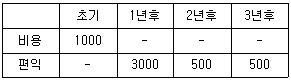
- 5.67%
- 4.21%
- 3.67%
- 2.20%
(정답률: 52%)
7. 수요곡선이 통행비용 증가에 따라 직선으로 감소하는 어떤 교통시설이 개선되었다. 개선 이전의 통행비용을 C1, 개선 후의 통행비용을 C2, 개선 이전의 통행량을 Q1, 개선 후의 통행량을 Q2라고 할 때, 시설 개선으로 발생된 소비자잉여 측면의 편익 계산식은?
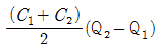
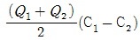
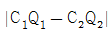
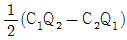
(정답률: 80%)
8. 교통수요 예측모형 중 추상수단모형(abstract mode model)에 대한 설명으로 옳은 것은?
- 지하철, 버스, 승용차와 같은 구체적인 교통수단의 수요를 추정하는 방법이다.
- 인구수, 고용수준과 같은 사회적 조건에 따른 교통수단의 수요을 추정하는 방법이다.
- 제공되는 교통서비스의 속성에 따른 최적수단을 선택하여 수요을 추정하는 방법이다.
- 교통수단을 차체의 중량과 엔진배기량에 따라 구분하고 이에 따른 수요를 추정하는 방법이다.
(정답률: 55%)
9. 다음 중 용량제약 노선배분법(Capacity Restraint Assignment)이 아닌 것은?
- 분할배분법(Incremental Assignment)
- 다중경로배분법(Multi-path Assignment)
- 최단 경로법(All-or-Nothing Assignment)
- 확률적 통행배분법(Probability Assignment)
(정답률: 74%)
10. 통행분포(Trip distribution)단계에서 교통량 추정에 사용되는 디트로이트 방법, 프라타 방법이 주로 사용되는 경우는?
- 교통 패턴의 변화가 큰 경우
- 교통 패턴의 변화가 작은 경우
- 사회경제활동의 변화가 큰 경우
- 장래에 교통 여건의 변화가 큰 경우
(정답률: 80%)
11. 대중교통수단의 여러 가지 비용에 대한 아래 그림에서 ㉠, ㉡, ㉢의 내용이 모두 옳은 것은?
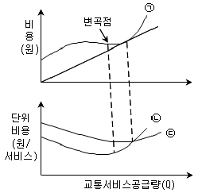
- ㉠ : 총비용, ㉡ : 한계비용, ㉢ : 평균비용
- ㉠ : 총비용, ㉡ : 평균비용, ㉢ : 한계비용
- ㉠ : 평균비용, ㉡ : 총비용, ㉢ : 한계비용
- ㉠ : 평균비용, ㉡ : 한계비용, ㉢ : 총비용
(정답률: 89%)
12. 다음의 교통수요관리 기법 중 주요 관리대상이 다른 하나는?
- 10부제 실시
- 혼잡통행료 징수
- 버스전용차로제 운영
- 공공주차장 주차요금 징수
(정답률: 77%)
13. 다음 중 격자형 노선망에 비해 방사형 대중교통 노선망(Radial Transit Line)이 같는 단점으로 옳은 것은?
- 노선망이 복잡하여 이용자에게 혼란을 초래한다.
- 노선의 도심 집중으로 교통혼잡을 야기할 수 있다.
- 외곽으로부터 도심까지의 통행거리가 상대적으로 길다.
- 잦은 환승으로 인한 승객의 불편과 대기시간의 증가를 가져온다.
(정답률: 77%)
14. 다음 중 장기ㆍ단기 교통계획에 대한 설명으로 옳은 것은?
- 단기교통계획은 소수의 대안, 장기교통계획은 다수의 대안
- 단기교통계획은 교통수요가 비교적 고정, 장기교통계획은 교통수요가 변화 가능
- 단기교통계획은 자본집약적, 장기교통계획은 저자본비용
- 단기교통계획은 서비스지향적, 장기교통계획은 시설지향적
(정답률: 96%)
15. 도시 지역 전체를 대상으로 하는 통행실태 조사 시 교통지구(traffic zone) 설정에 관한 설명으로 옳은 것은?
- 일반적으로 도심지역의 교통지구 크기가 작고, 인구밀도가 낮은 외곽 지역은 큰 교통지구를 갖는다.
- 조사지역에 대한 교통지구의 수는 교통지구의 크기에 상관없이 인접한 조사지역과 교통지구의 수가 동일하다.
- 교통지구내의 균질성을 유지하기 위해 내부의 사회ㆍ경제적 요인의 특성을 균일하게 유지하고 형태는 가능한 한 공간적으로 길게 늘어여 있어야 한다.
- 지구의 구분은 가능하면 통행의 발생, 교통류의 흐름에 따라 구분하고, 강, 산 등의 자연 경계물을 활용하되 인위적인 행정구역 단위는 고려하지 않는다.
(정답률: 90%)
16. 개별행태모형의 특성으로 옳은 것은?
- 최소제곱법에 따라 모형이 구축된다.
- 집단의 통행특성자료에 근거하여 교통수요를 추정한다.
- 관측 불가능한 효용이 갖는 분포의 특성을 무시하고 단일한 형태의 모형을 구축한다.
- 4단계 교통수요추정모형과 비교하여 여러 가지 과정을 동시에 수행할 수 있는 모형 구축이 가능하다.
(정답률: 63%)
17. 누적주차수요 추정 시 3가지 영향 변수에 해당되지 않는 것은?
- 1일 총 통행량
- 주차이용효율
- 평균주차시간
- 시간대별 도착분포
(정답률: 46%)
18. 지능형교통체계 정보수집시설에 대한 설명으로 옳지 않은 것은?
- 루프검지기는 교차로의 정지선 앞이나 링크 구간의 상류부에 설치할 수 있다.
- 영상검지기는 영상검지카메라가 최적의 시야가 확보되도록 설치하는 것이 중요하다.
- 동영상 정보 수집 검지기는 반복정체 또는 돌발상황에 따른 상시감시가 필요한 지점에 설치한다.
- 차량번호판 자동인식 장치는 차량번호판 인식을 통하여 과속단속 및 지점소통확인이 주요 설치 목적이다.
(정답률: 74%)
19. 다음 중 지구분할(Zoning)의 원칙으로 옳지 않은 것은?
- 존 내부의 통행이 많아야 한다.
- 존의 모향은 원형에 가까워야 한다.
- 존안에 다른 존이 포함되지 않아야 한다.
- 가능한 한 지형적이거나 행정적인 경계선을 사용해야 한다.
(정답률: 69%)
20. 다음 중 일방통행제의 장점으로 옳은 것은?
- 교통안전성 향상
- 대중교통용량의 감소
- 교통통제 설비수의 감소
- 운행자 및 보행자의 통행거리 감소
(정답률: 86%)
2과목: 교통공학
21. 차량의 회전저항(rolling resistance)에 관한 설명으로 옳지 않은 것은?
- 속도가 증가할수록 작다.
- 중량이 감소할수록 작다.
- 도로의 상태가 나쁠수록 크다.
- 저급도로에서 속도에 대한 차가 크다.
(정답률: 81%)
22. 속도에 관한 용어의 설명으로 옳지 않은 것은?
- 지점속도(Spot speed)란 어느 특정지점에서 측정한 차량속도로 각 차량 속도의 산술평균값이다.
- 통행속도(Travel speed)란 어느 특정 도로 구간을 통행한 평균속도로 각 차량 속도의 조화평균값이다.
- 주행속도(Running speed)란 실제 도로 조건에서 다른 교통의 영향을 받지 아니한 경우에 차량이 주행하는 속도이다.
- 설계속도(Design speed)란 어느 특정구간에서 모든 조건이 만족스럽고 속도가 단지 그 도로의 물리적 조건에 의해서만 좌우되는 최대안전속도이다.
(정답률: 67%)
23. 신호제어에 대한 설명으로 옳지 않은 것은?
- 교통 감응 신호기는 일정한 신호시간으로 운영되기 때문에 인접신호등과 연동시키기 편리하다.
- 정주기 신호란 미리 정해진 신호등 시간계획에 따라 신호등화가 규칙적으로 바뀌는 것을 말한다.
- 완전 감응식 제어에서는 검지기가 모든 접근로에 매설되어 해당 방향의 신호시간이 연장, 단축 또는 생략된다.
- 반감응 신호기는 교통량이 너무 많고 고속의 간선도로와 그 반대의 특성을 가진 도로가 만나는 교차로에 주로 사용한다.
(정답률: 80%)
24. 다음 중 교통류의 충격파에 대한 설명으로 옳지 않은 것은?
- 유체역학적 원리에서 나온 개념이다.
- 저속차량에 의하여 충격파가 발생할 수 있다.
- 충격파는 상류, 하류측으로 이동하거나 정지할 수 있다.
- 두 교통류간에서 발생하는 충격파의 속도는 교통류율 차이를 점유율 차이로 나눈 값이다.
(정답률: 75%)
25. 어느 신호교차로에서 보행자 횡단시간이 14초이고 차량의 황색신호가 4초일 때 보행자 횡단 방향과 같은 방향의 차량의 최소녹색시간은? (단, 보행자 신호등이 있는 경우이며 횡단보행자가 주기 당 10명 이상이라고 가정한다.)
- 16초
- 17초
- 18초
- 19초
(정답률: 71%)
26. 교통량 조사방법 중 조사대상 지역을 가로지르는 가상 선과 모든 도로와 교차하는 지점에서 조사하는 방법은?
- 주행차량조사
- Screen선 조사
- 차량종류별 조사
- 방향별 교통량 조사
(정답률: 90%)
27. 신호 교차점에서 동시 신호로서 4현시 운영되고 있는 i 접근로의 교통 용량을 산정한 값은? (단, i 접근로의 포화 교통량 2000 pcphgpl, 신호주기 120sec, 황색주기 각 2sec, i 접근로의 녹색시간 30sec, i 접근로의 손실시간 2sec)
- 467 pcphpl
- 469 pcphpl
- 487 pcphpl
- 500 pcphpl
(정답률: 49%)
28. 2차로 도로의 한 구간에서 1시간 동안 관측된 교통량이 3000대이고 평균속도가 20km/h 일 때, 해당 도로의 밀도와 차두간격(headway)의 값이 모두 옳은 것은?
- 밀도 : 75대/km/차로, 차두간격 : 1.2초/대
- 밀도 : 150대/km/차로, 차두간격 : 2.4초/대
- 밀도 : 75대/km/차로, 차두간격 : 2.4초/대
- 밀도 : 150대/km/차로, 차두간격 : 1.2초/대
(정답률: 53%)
29. 정주기 신호등(Pretimed Signal)의 장점으로 옳지 않은 것은?
- 인접 신호등과의 연동화가 용이하다.
- 구조가 간단하고 설치비용이 저렴하다.
- 다수의 보행인이 존재하는 장소에 적합하다.
- 교통패턴이 복잡하고 변동이 많은 경우에 적합하다.
(정답률: 81%)
30. 신호교차로의 이상적인 조건 기준으로 옳지 않은 것은?
- 차로폭 3.5m 이상
- 경사가 없는 접근부
- 교통류는 승용차로만 구성
- 접근부 정지선의 상류부 75m 이내에 노상 주ㆍ정차 시설 없음
(정답률: 78%)
31. 고속도로의 4km 구간에서 아래 표와 같이 6대의 차량에 대하여 여행시간을 측정하였다. 이 구간에서의 평균통행속도(space mean speed, km/시) 값은?
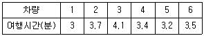
- 65.9 km/시
- 68.9 km/시
- 71.9 km/시
- 74.9 km/시
(정답률: 64%)
32. 다음 중 일정구간에서 시험차량이 추월을 당한 회수만큼 추월을 한 회수를 유지하면서 운행하여 주행시간을 기록하는 방법은?
- 번호판 판독법
- 주행차량 이용법
- 평균속도 운행법
- 교통류 적응운행법
(정답률: 63%)
33. 어느 차량이 곡선반경이 200m인 곡선부를 주행하고 있다. 곡선부의 편경사가 6%이고 마찰계수가 0.2 라면, 차량이 안전하게 주행하기 위한 속도는?
- 81.3km/h
- 98.6km/h
- 92.9km/h
- 1⑤.7km/h
(정답률: 74%)
34. 양방향 2차로인 장대터널의 한 쪽 방향에서 차량들이 50km/h의 속도로 주행 중이며, 밀도는 25대/km이다. 이 때 승용차 한 대가 고장 나서 10km/h로 주행을 시작했고 이 상황과 관련하여 교통량-밀도가 아래와 같을 때의 내용으로 가장 거리가 먼 것은?
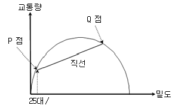
- 충격파는 직선A의 기울기이다.
- 원점과 P점을 잇는 가상선의 기울기는 50km/h일 것이다.
- 터널 내 CCTV로 관측하니 고장난 승용차로 인하여 교통류가 일렬로 줄지어 10km/h로 가는 것이 관찰되었다.
- 터널을 나온 후, 고장난 승용차가 길어깨로 빠져나가자마자 선두교통류들은 속도 50km/h, 밀도 25대/km로 복귀하였다.
(정답률: 72%)
35. 3대의 차량이 일정구간을 80 km/h의 일정한 속도로 지속 주행한다면, 이때 계산되는 공간평균속도와 시간평균속도의 관계를 올바르게 표현한 것은?
- 시간평균속도 = 공간평균속도
- 시간평균속도 ＜ 공간평균속도
- 시간평균속도 ＞ 공간평균속도
- 시간평균속도 ≥ 공간평균속도
(정답률: 63%)
36. 다음 중 감응식 신호기(Traffic Actuated Signal)에 비해 정주기식 신호기(Pretimed Signal)가 갖는 장점에 해당하지 않는 것은?
- 인접한 교차로간의 연동이 용이하다.
- 구조가 간단하고 설치비용이 저렴한 편이다.
- 교통량 변동의 예측이 불가능할 경우 적용이 용이하다.
- 보행자 교통량이 일정하면서 많은 곳에는 감응식 신호기보다 정주기식 신호기가 좋다.
(정답률: 76%)
37. 신호 교차로에서 유효녹색시간을 결정하는 식은?
- 녹색시간 + 황색시간
- 녹색시간 - 총 손실시간
- 녹색시간 + 황색시간 - 총 손실시간
- 녹색시간 - 황색시간 - 총 손실시간
(정답률: 85%)
38. 단일 서비스 기관의 대기행렬모형(M/M/1)에서 평균도착률이 λ, 평균서비스율이 μ일 때 시스템 내에 차량이 한 대도 없을 확률은?
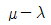
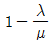
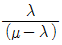
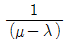
(정답률: 78%)
39. 다음 중 이동측정법(Moving Vehicle Method)에 대한 설명으로 옳지 않은 것은?
- 양방향 도로에서만 적용이 가능하다.
- 교통량과 통행시간 자료를 동시에 수집할 수 있다.
- 교통량이 아주 많은 다차로 도로 구간에 적용하기 적합하다.
- 조사 구간은 물리적ㆍ교통적 여건에서 유사한 연속성을 지니도록 해야 한다.
(정답률: 67%)
40. 고속도로 기본구간의 이상적인 조건에 해당하지 않는 것은?
- 평지
- 차로폭 3.5m 이상
- 측방여유폭 1m 이상
- 승용차만으로 구성된 교통류
(정답률: 88%)
3과목: 교통시설
41. 마찰계수가 0.4인 평탄한 도로에서 60km/h로 주행하던 차량이 위험물체를 보고 정지하기 위한 최소정지거리는? (단, 인지반응시간은 2.5초이다.)
- 약 65.4m
- 약 77.1m
- 약 90.7m
- 약 98.8m
(정답률: 75%)
42. 어느 버스터미널의 시간 당 버스 도착대수가 평균 100대일 때, 5분 동안 8대의 버스가 도착할 확률은? (단, 버스의 도착분포는 포아송분포를 따른다.)
- 0.139
- 0.426
- 0.713
- 1.000
(정답률: 63%)
43. 도로 곡선부 설계 시 편경사 값의 상한을 제한하는 이유로 옳은 것은?
- 공사의 어려움 때문에
- 곡선반경을 무한정 크게 할 수 없으므로
- 설계속도를 너무 높게 책정할 필요가 없으므로
- 정지 또는 저속 주행 시 차량이 미끄러져 내려오는 것을 방지하기 위하여
(정답률: 81%)
44. 좌회전 차로 설계 시 좌회전 차로 길이와 차로 폭을 결정할 때 동시에 고려하여야 할 요소로 옳지 않은 것은?
- 신호주기
- 접근속도
- 차량 혼입률
- 좌회전교통량
(정답률: 48%)
45. 다음 입체교차 형식 중 불완전 입체교차인 것은?
- 직결형
- 클로버형
- 트럼펫형
- 다이아몬드 형
(정답률: 66%)
46. 다음 중 1대당 최소 주차 소요 면적이 가장 큰 각도 주차 형식은? (단, 차종은 경형을 기준으로 하며 전진주차방식이다.)
- 30도 주차
- 45도 주차
- 60도 주차
- 90도 주차
(정답률: 81%)
47. 다음 설명 중 조명의 이점이 아닌 것은?
- 상가지역을 활성화 시킨다.
- 도로의 야간이용을 증가시킨다.
- 교통류를 질서 있게 이동시킨다.
- 교차로, 인터체인지, 엇갈림지역의 운영을 개선한다.
(정답률: 60%)
48. 다음 중 도로의 구분에 따른 중앙분리대의 설치 최소 폭 기준(m)으로 ㉠과 ㉡에 들어갈 내용이 모두 옳은 것은? (단, 자동차 전용도로의 경우는 고려하지 않는다.)
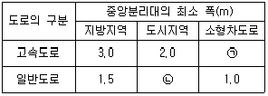
- ㉠ 2.0, ㉡ 1.0
- ㉠ 2.0, ㉡ 1.5
- ㉠ 1.5, ㉡ 1.0
- ㉠ 1.5, ㉡ 1.5
(정답률: 80%)
49. 버스전용차로 중 다른 전용차로 형태에 비하여 중앙버스전용차로가 갖는 단점이 아닌 것은?
- 승하차 안전섬 접근거리가 길어진다.
- 가로변 상업 활동과의 상충이 불가피하다.
- 여러 가지 안전시설 및 부가되는 신호기로 인해 비용이 많이 든다.
- 전용차로에서 우회전하는 버스나 일반차로에서의 좌회전차량에 대한 세심한 처리가 강구되어야 한다.
(정답률: 81%)
50. 자전거 교통을 다른 교통수단과의 분리여부에 대한 검토 시 고려사항에 대한 설명으로 옳지 않은 것은?
- 자전거 교통량이 많아지면 보행자의 분리가 필요하다.
- 자전거 일교통량이 500대/일 이상이면 자동차와 분리할 필요가 있다.
- 교통량이 적고 속도가 낮은 편도 1차로 도로에서는 자전거도로를 분리하여야 한다.
- 자전거의 교통량, 자동차의 교통량, 주행속도를 고려하여 자전거도로의 분리여부를 결정한다.
(정답률: 82%)
51. 휴게시설을 설치할 때, 모든 휴게시설 상호간의 표준 배치간격은?
- 10km
- 15km
- 25km
- 30km
(정답률: 58%)
52. K30에 대한 설명으로 옳지 않은 것은?
- K30이 높을수록 교통량의 변화가 심하다.
- 도시부 도로가 지방부 도로보다 K30이 크다.
- K30은 설계시간교통량을 계산할 때 사용한다.
- 연평균 일교통량이 큰 도로일수록 K30은 일반적으로 작다.
(정답률: 68%)
53. 도로의 계획목표연도 설정의 기준에 관한 설명으로 가장 적절하지 못한 것은?
- 고급도로의 경우 저급도로에 비해 목표연도를 보다 짧게 정해야 한다.
- 목표연도의 설정은 적정한 정확도로서 신뢰할 수 있는 교통량 예측의 범위가 좋다.
- 경제성 분석 결과에 따라 단계건설을 고려한 가장 유리한 최종 목표연도를 산정한다.
- 교통량의 증가가 심한 지역은 목표연도를 짧게 잡아 불확실한 장래에 대한 오차를 줄인다.
(정답률: 77%)
54. 교량 등의 도로구조물 설계 시 고려사항으로 옳지 않은 것은?
- 내진성
- 설계하중
- 내풍안전성
- 설계속도
(정답률: 73%)
55. 좌회전차로의 길이 산정에 대한 설명으로 옳은 것은?
- 감속을 위한 길이는 대기자동차를 위한 길이보다 중요하다.
- 대기하는 좌회전 차량을 위한 충분한 공간이 확보되어야 한다.
- 좌회전차량이 적은 경우 1대의 차량이 대기할 공간이 확보되면 된다.
- 비신호교차로의 경우 첨두시간 평균 5분간 도착하는 좌회전 차로의 대기 자동차를 기준으로 산정한다.
(정답률: 81%)
56. 지방지역 도로 중에서 군내에 위치한 주거단위에 접근하기 위해 제공하며, 통행거리도 짧고 우리나라 도로망 중에서 도로의 기능이 가장 낮은 도로는?
- 고속도로
- 집산도로
- 보조간선도로
- 국지도로
(정답률: 78%)
57. 도로변에 방호울타리를 설치하고자 할 때 그 위치로 옳지 못한 것은?
- 길어깨 바깥쪽으로 설치되어야 한다.
- 성토부 시작점으로부터 도로 안쪽에 설치한다.
- 장애물이 있으면 장애물에 연결 설치하여야 한다.
- 끝부분이나 시작부분은 경사지게 설치하여 흙에 묻는 것이 좋다.
(정답률: 62%)
58. 아래 설명 중 ㉠과 ㉡에 들어가는 기준이 모두 옳은 것은?
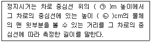
- ㉠ 1, ㉡ 12
- ㉠ 2, ㉡ 12
- ㉠ 1, ㉡ 15
- ㉠ 2, ㉡ 15
(정답률: 73%)
59. 50km/h로 주행 중인 차량이 평면 신호교차로에서 전방의 신호를 인지하기 위해 확보되어야 하는 최소거리는? (단, 인지반응시간은 2.0초, 감속도는 3.0m/s2이다.)
- 약 50m
- 약 60m
- 약 70m
- 약 80m
(정답률: 53%)
60. 교차로 접근 85% 주행속도가 60km/h일 때 신호등 최소가시거리는?
- 50m
- 75m
- 110m
- 145m
(정답률: 36%)
4과목: 도시계획개론
61. 다음 중 지구단위계획에 의하여 지구단위계획구역에 설치할 수 없는 기반시설은?
- 하수도
- 연구시설
- 공영차고지
- 종합의료시설
(정답률: 50%)
62. 토지이용계획의 목표 설정 시 고려해야 할 일반적인 사항이 아닌 것은?
- 개발과 환경의 질적 수준을 동시에 고려해야 한다.
- 다양한 주생활에 필요한 제반 기능을 충족시켜야 한다.
- 단지 간 계층별 독립성을 통한 프라이버시의 제고를 모색해야 한다.
- 쾌적하고 건강한 생활을 영위하는데 필요한 조건을 갖추어야 한다.
(정답률: 75%)
63. 다음 중 원칙적으로 광역도시계획을 수립할 수 없는 자는?
- 구청장
- 도지사
- 특별시장
- 국토교통부장관
(정답률: 75%)
64. 다음 중 지속가능한 도시개발의 방식으로 볼 수 없는 것은?
- 개발과 환경보전의 조화
- 개발밀도를 높여 개발물량의 최소화
- 환경훼손이 최소화되는 개발적지 선택
- 승용차의 이동성 제고를 위한 기반시설 투자
(정답률: 51%)
65. 도시재생 활성화 및 지원에 관한 특별법령상 도시재생 선도지역에서 설치비용을 지원하는 도시재생기반시설이 아닌 것은?
- 공동구
- 공원ㆍ녹지
- 공용주차장
- 노후 건축물
(정답률: 66%)
66. 버제스(Burgess)의 동심원이론에서 제4권역에 해당하는 토지이용은?
- 공업지대
- 점이지대
- 고급주택지대
- 노동자주택지대
(정답률: 68%)
67. 토지이용과 교통의 관계에 대한 설명으로 옳지 않은 것은?
- 토지이용과 교통은 상호의존적으로 작용하며 순환적인 관계를 가진다.
- 활동의 공간적 입지는 활동패턴과 통행패턴에 영향을 주지만, 교통체계는 그다지 영향을 주지 않는다.
- 토지이용체계는 동적으로 변하기 때문에 교통의 토지이용에 대한 영향을 분리하여 관찰하기가 곤란하다.
- 어느 도시가 성장할 때 교통시설이 도시 내에 설치되는 위치에 따라 도시의 성장방향 결정에 영향을 준다.
(정답률: 68%)
68. 환지방식에 의한 도시개발사업을 시행할 경우, 일정한 토지를 환지로 정하지 아니하고 보류지로 정하여 그 중 일부를 체비지로 정하는 가장 직접적인 목적은?
- 공공시설 용지를 확보하기 위하여
- 생활환경을 위한 공지확보를 위하여
- 사업에 필요한 경비를 충당하기 위하여
- 장래의 토지수요에 적응할 수 있는 토지확보를 위하여
(정답률: 71%)
69. 성장극(growth pole)이란 용어를 사용하고 거점개발이론을 경제적 차원에서 다루어 체계화한 사람은?
- P. Wolf
- F. C. Perroux
- B. Berry
- C. Stein
(정답률: 72%)
70. 도시공원 및 녹지 등에 관한 법률상 공원녹지 기본계획의 내용이 아닌 것은?
- 도시녹화에 관한 사항
- 공원녹지 활용 계약에 관한 사항
- 공원녹지의 보전ㆍ관리ㆍ이용에 관한 사항
- 공원녹지의 축(軸)과 망(網)에 관한 사항
(정답률: 54%)
71. 다음 중 2 이상의 특별시ㆍ광역시ㆍ특별자치시ㆍ특별자치도ㆍ시 또는 군의 관할구역에 걸치는 광역시설에 해당되지 않는 것은?
- 광장
- 도로
- 항만
- 공동구
(정답률: 39%)
72. 래드번(Radburn)계획의 특징으로 옳은 것은?
- 보행자와 자동차 교통을 분리하였다.
- 개발이익의 사회 환원을 중시하였다.
- 영국에서 시작된 신도시 건설 사업이다.
- 환상의 그린벨트 외곽에 신도시를 건설하는 계획이다.
(정답률: 75%)
73. 도시화는 집중적 도시화, 분산적 도시화, 역도시화의 3가지 단계로 진행된다고 한다. 이 중 도시화의 마지막 단계인 역도시화에 대한 설명이 아닌 것은?
- 도시의 인구가 외곽으로 확산되는 단계
- 집적의 불이익이 집적의 이익보다 커지게 되는 단계
- 도시의 인구 이주가 U-턴 또는 J-턴 현상이 발생하는 단계
- 도시권 전체의 인구가 감소하는 탈도시화(de-urbanization) 단계
(정답률: 54%)
74. 다음 중 원칙적으로 보전녹지지역ㆍ생산녹지지역ㆍ보전관리지역ㆍ생산관리지역ㆍ농림지역 및 자연환경보전지역에 설치할 수 있는 도로에 해당하지 않는 것은?
- 기존 취락과 연결되는 도로
- 도시ㆍ군계획시설에의 진입도로
- 당해 지역을 통과하는 교통량을 처리하기 위한 도로
- 도시ㆍ군계획사업이 시행되는 지역을 우회하기 위한 도로
(정답률: 48%)
75. 국토의 계획 및 이용에 관한 법령에 따른 개발진흥지구의 세부 구분에 해당하지 않는 것은?
- 특정개발진흥지구
- 환경개발진흥지구
- 관광ㆍ휴양개발진흥지구
- 산업ㆍ유통개발진흥지구
(정답률: 56%)
76. 다음 중 용도지역별 도로율 기준이 옳은 것은?(오류 신고가 접수된 문제입니다. 반드시 정답과 해설을 확인하시기 바랍니다.)
- 녹지지역은 10% 이상 20% 미만이며, 이 경우 간선도로의 도로율은 5% 이상 10% 미만이어야 한다.
- 주거지역은 15% 이상 30% 미만이며, 이 경우 간선도로의 도로율은 8% 이상 15% 미만이어야 한다.
- 상업지역은 20% 이상 30% 미만이며, 이 경우 간선도로의 도로율은 10% 이상 15% 미만이어야 한다.
- 공업지역은 20% 이상 30% 미만이며, 이 경우 간선도로의 도로율은 5% 이상 10% 미만이어야 한다.
(정답률: 50%)
77. 고대 로마시대에 공공 건축물에 둘러싸여 집회장이나 시장으로 사용되었던 도시의 공공광장의 명칭은?
- 포럼(Forum)
- 아고라(Agora)
- 바실리카(Basilica)
- 실체스터(Silchester)
(정답률: 68%)
78. 도시인구가 30만 명, 취업률 30%, 제조업인구 구성비가 30%, 제조업인구 1인당 점유 토지 면적이 200m2, 공공용지율이 30%, 건폐율이 50%, 평균 층수가 3층일 때 공업지역 소요 면적은?(오류 신고가 접수된 문제입니다. 반드시 정답과 해설을 확인하시기 바랍니다.)
- 771.4ha
- 571.4ha
- 514.3ha
- 289.3ha
(정답률: 41%)
79. 도시조사분석방법론에 대한 설명으로 옳지 않은 것은?
- 추정된 회귀분석모형은 미래예측에 활용할 수 있다.
- 회귀분석이란 독립변수와 종속변수 사이의 선형 및 비선형관계를 구하는 방법이다.
- 상관분석이란 상관계수를 이용하여 두 변수의 관계가 얼마나 밀접한가를 측정하는 방법이다.
- 다중선형회귀분석이란 하나의 종속변수와 하나의 독립변수 사이의 선형관계를 구하는 방법이다.
(정답률: 71%)
80. 다음 중 지역의 경제활동 예측모형인 경제기반모형에 대한 설명으로 옳은 것은?
- 어떤 산업의 생산량은 다른 산업을 위한 상품과 최종 소비하는 생산물의 합과 동일하다.
- 경제성장요인을 체계적으로 분류하여 성장요인이 지역경제에 미치는 영향을 분석한다.
- 입지계수(LQ)가 1인 산업의 생산품이나 서비스는 지역의 수요만을 충당하는 사업으로 볼 수 있다.
- 지역의 산업은 기반부문과 비기반부문으로 구성되며 기반부분은 수입산업, 비기반부문은 수출산업으로 구분된다.
(정답률: 60%)
5과목: 교통관계법규
81. 공공기관의 장이 소관 업무를 수행하기 위하여 국가통합교통체계효율화법에서 규정한 개별교통조사를 시행할 때, 국토교통부장관에게 결과를 통보하여야 하는 기간은 조사를 완료한 날부터 며칠 이내인가?
- 15일 이내
- 30일 이내
- 45일 이내
- 60일 이내
(정답률: 75%)
82. 도시교통정비 촉진법 상 도시교통정비지역에서 기본계획ㆍ중기계획 및 시행계획과 조화를 이루도록 하여야 하는 계획으로 규정되어 있지 않는 것은?
- 도시ㆍ군기본계획
- 도시계획시설계획
- 도로건설ㆍ관리계획
- '도시철도법'제5조에 따른 도시철도망구축계획
(정답률: 51%)
83. 도로법 시행령상 접도구역(接道區域)을 지정할 때에는 소관 도로의 경계선에서 몇 미터를 초과하지 아니하는 범위에서 지정하여야 하는가? (단, 고속국도의 경우는 제외한다.)
- 5m
- 10m
- 15m
- 20m
(정답률: 27%)
84. 교통시설 투자의 효율화를 위해 국토교통부장관은 관계 행정기관의 장과 협의하여 국가기간교통시설 개발사업과 지방교통시설 개발사업 간의 투자재원의 연계운용대책 수립 시 연계운용대책에 포함되어야 할 사항이 아닌 것은?
- 투자평가지침
- 대상사업 및 연계개발계획
- 대상사업별 사업비 및 재원 조달 방안
- 관계 중앙행정기관과 지방자치단체 간의 투자재원분담에 관한 기준과 조건
(정답률: 42%)
85. 도로법에서 제시한 도로의 등급으로 높은 순위부터 나열한 것은?
- 고속국도-특별시도ㆍ광역시도-일반국도-지방도
- 고속국도-특별시도ㆍ광역시도-지방도-일반국도
- 고속국도-일반국도-특별시도ㆍ광역시도-지방도
- 고속국도-일반국도-지방도-특별시도ㆍ광역시도
(정답률: 70%)
86. 도로교통법령상 교통안전 표지 중 어린이 보호표지는 어린이 보호지점 또는 구역의 어느 정도 전에 설치하도록 규정하고 있는가?
- 20 ~ 50m
- 30 ~ 50m
- 50 ~ 100m
- 50 ~ 200m
(정답률: 69%)
87. 주차장법상 노외주차장 경사로의 종단경사도로 옳은 것은?
- 직선부분 16% 이하, 곡선부분 13% 이하
- 직선부분 16% 이하, 곡선부분 14% 이하
- 직선부분 17% 이하, 곡선부분 14% 이하
- 직선부분 17% 이하, 곡선부분 15% 이하
(정답률: 71%)
88. 교통유발부담금을 부과하는 근거법은?
- 주차장법
- 교통안전법
- 도시계획법
- 도시교통정비 촉진법
(정답률: 64%)
89. 교통안전법상 국가교통안전기본계획에 포함되어야 하는 사항으로 옳지 않은 것은?
- 대중교통체계의 개선
- 교통안전에 관한 중ㆍ장기 종합정책방향
- 교통안전지식의 보급 및 교통문화 향상목표
- 육상교통ㆍ해상교통ㆍ항공교통 등 부문별 교통사고의 발생현황과 원인의 분석
(정답률: 60%)
90. 보행자의 통행 방법에 대한 설명으로 옳지 않은 것은?
- 보행자는 보도와 차도가 구분되지 아니한 도로에서는 도로의 우측으로만 통행하여야 한다.
- 보행자는 안전표지 등에 의하여 횡단이 금지되어 있는 도로의 부분에서는 그 도로를 횡단하여서는 아니 된다.
- 보행자는 보도와 차도가 구분된 도로에서 도로공사 등으로 보도의 통행이 금지된 경우나 그 밖의 부득이한 경우를 제외하고는 언제나 보도로 통행하여야 한다.
- 보행자는 모든 차의 바로 앞이나 뒤로 횡단하여서는 아니 되지만, 횡단보도를 횡단하거나 신호기 또는 경찰공무원등의 신호나 지시에 따라 도로를 횡단하는 경우에는 그러하지 아니하다.
(정답률: 64%)
91. 국토교통부장관이 육상ㆍ해상ㆍ항공 교통 분야 전국단위교통정보의 수집ㆍ분석ㆍ관리 및 제공업무를 수행하고, 교통정보의 보급ㆍ유통을 촉진하기 위하여 구축ㆍ운영하여야 하는 것은?
- 국가통합교통정보센터
- 지구통합교통정보센터
- 지역통합교통정보센터
- 교통ㆍ물류통합정보센터
(정답률: 72%)
92. 국토교통부장관은 국가교통조사의 목표 및 전략, 세부 조사의 내용 및 방법 등에 관한 국가교통조사계획을 몇 년 단위로 수립하는가?
- 1년
- 3년
- 5년
- 10년
(정답률: 79%)
93. 국가교통안전시행계획에 관한 설명으로 옳은 것은?
- 교통안전세부시행계획은 국무회의의 심의를 거쳐 공고한다.
- 국가 매 5년마다 수립하는 장기적 종합적인 교통 안전계획이다.
- 지정행정기관이 당해연도에 교통안전기본계획을 시행하기 위한 계획이다.
- 매년 지정행정기관의 장이 교통안전시행계획에 의하여 작성하는 계획이다.
(정답률: 41%)
94. 다음 중 도로교통법에 따른 정의로 옳지 않은 것은?
- '자동차전용도로'란 자동차만 다닐 수 있도록 설치된 도로를 말한다.
- '보도'란 연석선, 안전표지나 그와 비슷한 인공구조물로 경계를 표시하여 보행자가 통행할 수 있도록 한 도로의 부분을 말한다.
- '안전지대'란 보도와 차도가 구분되지 아니한 도로에서 보행자의 안전을 확보하기 위한 안전표지 등으로 경계를 표시한 도로의 가장자리 부분을 말한다.
- '신호기'란 도로교통에서 문자ㆍ기호 또는 등화를 사용하여 진행ㆍ정지ㆍ방향전환ㆍ주의 등의 신호를 표시하기 위하여 사람이나 전기의 힘으로 조작하는 장치를 말한다.
(정답률: 74%)
95. 도로법상 고속국도, 자동차전용도로 또는 대통령령으로 정하는 도로와 다른 도로, 철도, 궤도, 교통용으로 사용하는 통로나 그 밖의 시설을 교차시키려할 때 특별한 사유가 없는 경우의 교차 방법으로 옳은 것은?
- 신호교차시설
- 입체교차시설
- 평면교차시설
- 회전식교차시설
(정답률: 70%)
96. 주차장 설비기준에 대한 설명으로 옳지 않은 것은?
- 경형자동차에 대하여는 전용주차구획을 일정비율 이상 정할 수 있다.
- 노외주차장을 설치하는 경우에는 미리 관할 경찰서장의 의견을 들어야 한다.
- 주차장의 구조ㆍ설비기준 등에 관하여 필요한 사항을 해당 지방자치단체의 조례로 법령과 달리 정할 수 있다.
- 노상주차장을 설치하는 경우에는 도시ㆍ군관리계획과 도시교통정비 촉진법에 따른 도시교통정비 기본계획에 따라야 한다.
(정답률: 63%)
97. 신호등이 있는 교차로에서의 통행방법으로 옳지 않은 것은?
- 모든 차의 운전자는 교차로에서 좌회전을 하려는 경우에는 미리 도로의 중앙선을 따라 서행하면서 교차로의 중심 안쪽을 이용하여 좌회전하여야 한다.
- 자전거의 운전자는 교차로에서 좌회전하려는 경우에는 미리 도로의 좌측 가장자리로 붙어 서행하면서 교차로의 가장자리 부분을 이용하여 좌회전하여야 한다.
- 모든 차의 운전자는 교차로에서 우회전을 하려는 경우에는 신호에 따라 정지하거나 진행하는 보행자 또는 자전거에 주의하며 미리 도로의 우측 가장자리를 서행하면서 우회전하여야 한다.
- 모든 차의 운전자는 교통정리를 하고 있지 아니하고 일시정지나 양보를 표시하는 안전표지가 설치되어 있는 교차로에 들어가려고 할 때에는 다른 차의 진행을 방해하지 아니하도록 일시정지하거나 양보하여야 한다.
(정답률: 68%)
98. 주차장법상 주차장의 정의에 따른 종류에 해당되는 것은?
- 공용주차장
- 유료주차장
- 사설주차장
- 노외주차장
(정답률: 73%)
99. 국가통합교통체계효율화법에서 타당성 재평가 전문기관 및 다른 전문기관의 지정에 관한 설명으로 옳지 않은 것은?
- 재평가에 관한 능력과 경험을 갖춘 평가대행자는 타당성 재평가를 수행할 수 있다.
- '국토교통부령으로 정하는 전문기관'이란「정부출연연구기관 등의 설립ㆍ운영 및 육성에 관한 법률」에 따른 한국교통연구원과 국토연구원을 말한다.
- 「과학기술분야 정부출연연구기관 등의 설립ㆍ운영 및 육성에 관한 법률」에 따른 연구기관으로서 평가대행자로 등록한 기관은 타당성 재평가를 수행할 수 있다.
- 「정부출연연구기관 등의 설립ㆍ운영 및 육성에 관한 법률」에 따른 연구기관으로서 공공교통시설 개발사업 타당성 평가대행자로 등록한 기관은 타당성 재평가를 수행할 수 있다.
(정답률: 50%)
100. 도시교통정비지역에서 교통유발부담금의 부과대상 시설물은 해당 시설물의 각층 바닥 면적을 합한 면적이 최소 얼마 이상인 시설물로 하는가? (단, 부과대상 시설물이 주택법에 따른 주택단지에 위치한 시설물로서 도로변에 위치하지 아니한 시설물인 경우는 고려하지 않는다.)
- 1000m2
- 2000m2
- 3000m2
- 4000m2
(정답률: 64%)
6과목: 교통안전
101. 다음 중 물피사고(PDO)를 기준으로, 각 사고유형에 따라 피해정도를 나타내는 지수를 개발하여 이를 근거로 각 사고에 가중치를 부여하여 사고다발지점을 선정하는 방법은?
- 사고율법에 의한 방법
- 위험도지수에 의한 방법
- 사고피해정도에 의한 방법
- 사고발생빈도수에 의한 방법
(정답률: 74%)
102. 시거불량에 의한 교통사고 예방대책에 해당되지 않는 것은?
- 장애물 제거
- 예고표지 설치
- 시선유도표지 설치
- 오르막차로 설치
(정답률: 82%)
103. 인터체인지 램프의 사고율과 가장 관계가 먼 것은?
- 램프의 위치
- 기하설계요소
- 램프의 교통량
- 주도로의 평면 및 종단 선형과의 관계
(정답률: 62%)
104. 교통사고 사상자 기준에 의한 교통사고로 인한 사망사고의 정의로 옳은 것은?
- 교통사고 발생 시부터 1일(24시간) 이내 사망자를 낸 사고
- 교통사고 발생 시부터 5일(120시간) 이내 사망자를 낸 사고
- 교통사고 발생 시부터 10일(240시간) 이내 사망자를 낸 사고
- 교통사고 발생 시부터 30일(720시간) 이내 사망자를 낸 사고
(정답률: 80%)
1⑤. 35km의 도로 구간에서 1년 동안 50건의 교통사고가 발생하였다. 일평균 교통량이 600대이고 총 사고건수 중 5%가 치명적인 사고였다면 1억대ㆍkm당 치명적 사고의 발생률은?
- 0.33건
- 3.26건
- 32.6건
- 326건
(정답률: 71%)
106. 다음 중 노변방호책의 설계 기준으로 옳지 않은 것은?
- 차량이 걸려 전도하거나 튕겨나가지 않아야 한다.
- 차량이 충돌과 동시에 정지할 수 있도록 하여야 한다.
- 차량의 경로나 정지한 지점이 인접차로를 침범하지 않아야 한다.
- 차량을 관통하거나 튀어오르게 하지 않고 차량의 방향을 수정해야 한다.
(정답률: 74%)
107. 미끄럼흔적으로부터 미끄럼거리를 추정하는 기준으로 옳지 않은 것은?
- 곡선미끄럼의 경우 미끄럼흔적들의 평균값을 미끄럼거리로 한다.
- 직선미끄럼의 경우 모든 바퀴들의 미끄럼흔적 중 가장 짧은 것을 미끄럼거리로 한다.
- 양후륜의 미끄럼흔적들이 전륜의 미끄럼흔적의 어느 한 쪽을 벗어나면 곡선미끄럼으로 간주한다.
- 양후륜의 미끄럼흔적들 모두가 전륜의 미끄럼흔적을 벗어나지 않으면 직선미끄럼으로 간주한다.
(정답률: 72%)
108. 다음 중 도로의 횡단면과 사고에 대한 일반적인 설명으로 옳지 않은 것은?
- 노면의 마찰계수가 작을수록 사고율이 낮다.
- 차로폭이 넓은 도로가 그렇지 않은 도로보다 사고율이 낮다.
- 차도와 길어깨를 구획하는 노면표시를 하면 사고가 감소한다.
- 억제형이나 방책형의 중앙분리대를 설치할 경우 중앙분리대를 설치하지 않을 때에 비해 사고율이 그다지 감소하지 않는다.
(정답률: 69%)
109. 현재 국내 도로설계에서 정지시거 산출에 사용되는 운전자 인지반응시간은 얼마인가?
- 1.5초
- 2.0초
- 2.5초
- 3.0초
(정답률: 75%)
110. 2대 이상의 자동차가 동일한 방향으로 주행하던 중 뒤차가 앞차의 후면을 충격한 사고를 무엇이라 하는가?
- 추돌
- 전도
- 전복
- 충돌
(정답률: 84%)
111. 어느 지역의 12km 도로구간의 일평균교통량이 10,000대이고, 이와 유사한 도로구간의 평균사고율이 연간 3.5건일 때, 유의수준(α)이 0.⑤인 경우 이 도로구간에서의 임계사고율(RC)은? (단, k=1.645이며, 백만 대ㆍkm 당 사고율이다.)
- 약 3.58건(백만 대ㆍkm)
- 약 3.98건(백만 대ㆍkm)
- 약 4.38건(백만 대ㆍkm)
- 약 4.88건(백만 대ㆍkm)
(정답률: 65%)
112. 사고지점도에 관한 설명으로 옳지 않은 것은?
- 범례는 가능한 한 단순해야 한다.
- 사고건수 대신 사상자수를 나타내는 것이 일반적이다.
- 지도상에 핀, 색종이를 붙이거나 표시하여 사고지점을 나타낸다.
- 사고가 집중적으로 발생하는 지점의 신속한 시각적 색인을 제공한다.
(정답률: 85%)
113. 다음의 교통안전대책 중 안전과 이동성이 상충되는 것은?
- ABS
- 안전띠
- 과속방지턱
- 충격흡수식 지주
(정답률: 79%)
114. 주행 중이던 차량이 급정거하여 스키드마크가 20m가 나타난 다음 3m를 지나서 다시 25m가 계속되었다면 차량의 제동 전 초기 속도는? (단, 타이어와 노면의 마찰계수는 0.8이고, 경사는 없다.)
- 95.6km/h
- 99.7km/h
- 1⑤.6km/h
- 107.7km/h
(정답률: 61%)
115. 교통안전대책 3-E에 포함되지 않는 것은?
- Education
- Engineering
- Enforcement
- Encouragement
(정답률: 84%)
116. 다음 교통정온화(traffic calming) 기법에서 차량의 속도를 감소시키기 위한 대책으로 거리가 먼 것은?
- 노폭제한
- 차로굴절
- 차로 추가 설치
- 과속방지시설 설치
(정답률: 85%)
117. 교통량 및 통행속도 등 교통조건은 교통사고와 밀접한 관련이 있다. 다음 중 교통조건과 관련된 일반적인 교통사고 특성과 가장 거리가 먼 내용은?
- ADT가 높을수록 사고율이 높은 경향이 있다.
- 차량간의 속도분포가 커지면 일반적으로 사고율은 낮아진다.
- 교통류 내의 차종구성에서 대형차량이 많으면 일반적으로 사고율이 높다.
- 사고감소를 위한 속도제한 설정시, 도로조건과 교통조건 등을 충분히 고려해야 한다.
(정답률: 77%)
118. 교통사고 발생 시 수집되는 주요 조사 항목이 아닌 것은?
- 교통통제방법
- 사고발생 일시 및 지점
- 교통사고원인 및 피해정도
- 사고당사자(운전자, 동승자, 보행자 등) 정보
(정답률: 60%)
119. 사고위험지역 선정 시 교통량이 적은 지방부 도로에 효과적이지만 교통량 수준에 따른 요인은 고려하지 않는 단점이 있는 방법은?
- 사고율법
- 사고건수법
- 율-품질관리법
- 사고건수-율법
(정답률: 65%)
120. 시행된 교통안전개선사업의 평가방법 중 사업지점에서의 시행전후 효과척도의 비율(%) 변화량을 동기간 동안 개선이 시행되지 않은 유사지점에서의 비율(%) 변화량과 비교하여 개선효과를 평가하는 방법은?
- 사전/사후분석(Before and After Study)
- 비교평가분석(Comparative Parallel Study)
- 평균사고율법(Rate-Quality Control Method)
- 통제지점에 의한 사전/사후분석(Before and After Study with Control Sites)
(정답률: 54%)